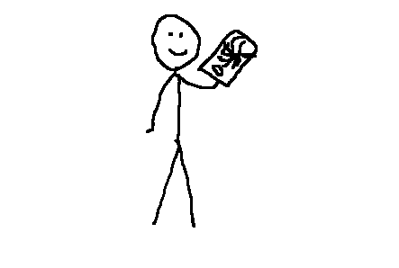

Zevidu tudta, hogy miből írunk dolgozatot
Vasárnap este, Zevidu Brendon 8. C-s diák felkereste Polinómot a mellékelt csevegésben. Zevidu először arra volt kíváncsi, hogy csak irodalomból és történelemből írunk-e dolgozatot. Meglepő módon a helyes információk birtokában volt. Mint később Jenő Lámától megtudtuk, Zevidu éppen befejezte a Valoratozást, amikor eszébe jutott, hogy tanulni kellene a másnapi dolgozatra.Ezen kívül az is érdekelte, hogy miért nem kell a síszünet ideje alatt iskolába menni.